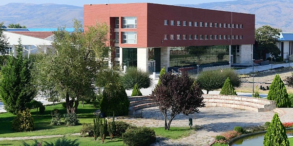
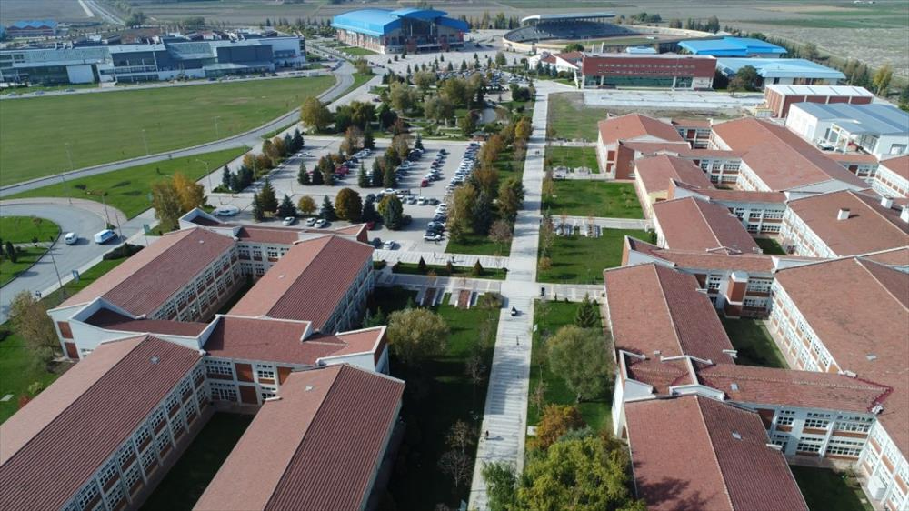

Welcome to Eskişehir Technical University


📢 Announcements
- 16 March 2026 2025–2026 Spring Semester final exam schedule has been published. Please check student information system.
- 14 March 2026 Applications for the Graduate School of Natural and Applied Sciences are now open until April 1.
- 12 March 2026 International Conference on Engineering Sciences will be held on April 20–22, 2026, on our campus.
- 10 March 2026 The library working hours have been extended to 22:00 during the exam period.
- 08 March 2026 ESTÜ Career Days 2026 event will take place on March 25–27. Over 80 companies will participate.
- 05 March 2026 New double major and minor program registration period begins March 18.
- 01 March 2026 Erasmus+ student exchange programme applications for 2026–2027 are open. Deadline: April 15.